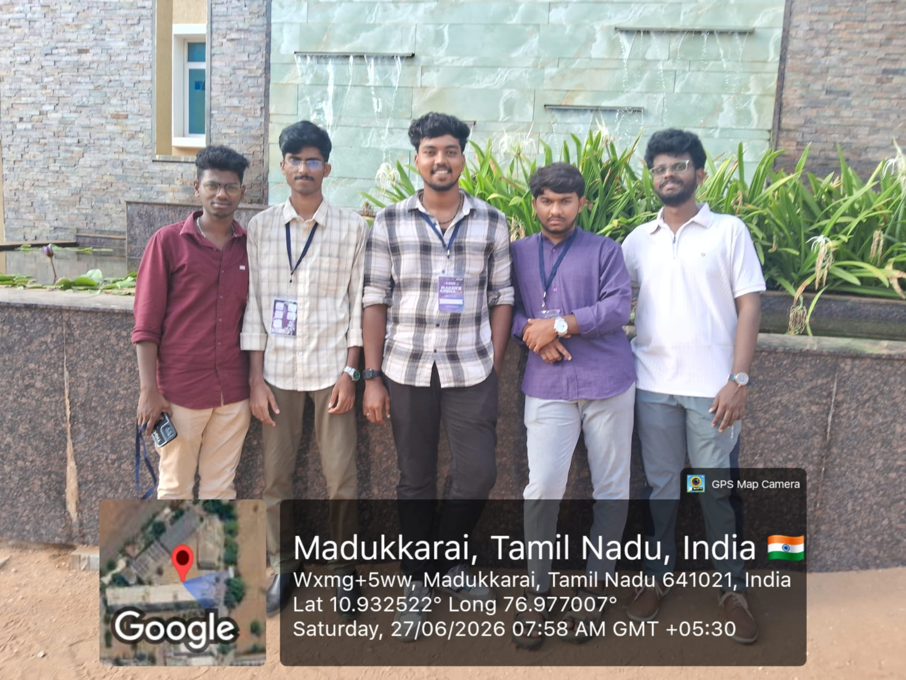
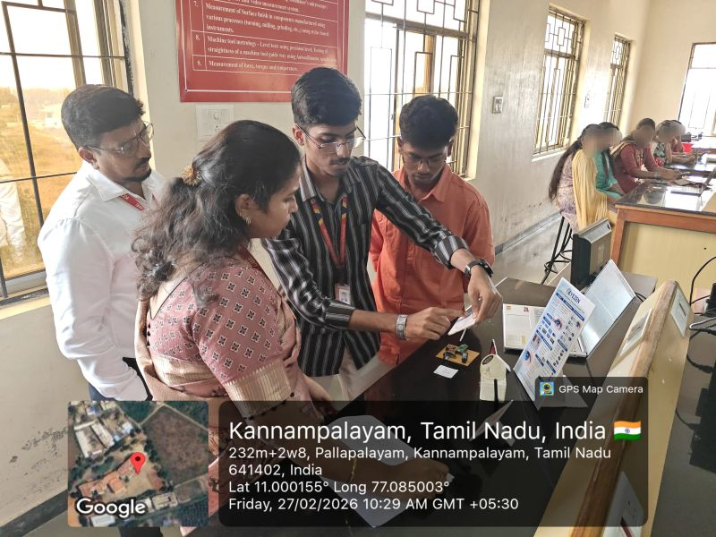

PROJECT DEVELOPMENT
EYEZEN · Adaptive Illumination
Exploring ambient-light sensing and adaptive lighting concepts for more comfortable study and work environments.
BIOMEDICAL ENGINEERING · MEDICAL TECHNOLOGY
I'm Prathosh H, a pre-final-year Biomedical Engineering student exploring medical devices, biomedical instrumentation, healthcare AI and practical healthcare innovation.

I am interested in how medical technology is designed, tested and used to support safer, more effective healthcare.
As a pre-final-year Biomedical Engineering student at Sethu Institute of Technology, I work on student prototypes that connect biomedical instrumentation, sensors, embedded systems and software. My career interests include medical-device development, clinical engineering, biomedical manufacturing and quality control, process improvement, and healthcare AI. I am building my skills step by step through projects, hospital training and innovation activities.
Building a foundation in biomedical devices, clinical environments, healthcare technology and innovation.
PROJECT DEVELOPMENT
Exploring ambient-light sensing and adaptive lighting concepts for more comfortable study and work environments.
BIOMEDICAL IOT
Building familiarity with ECG signal acquisition, local waveform display and connected embedded systems.
HOSPITAL EXPOSURE
Gaining hospital exposure and understanding the role of biomedical equipment, maintenance awareness and safe clinical workflows.
INNOVATION ECOSYSTEM
Sharing ideas, collaborating with teammates and learning how early-stage concepts are presented and developed.
Biomedical builds, prototypes and experiments in progress.
CURRENT FEATURED BUILD
Intelligent Eye Fatigue Regulation Through Adaptive Illumination Control.
EYEZEN explores an adaptive lighting approach using ambient illumination and occupancy sensing. The goal is to develop a practical prototype for learning and work environments, with a focus on user comfort and responsible engineering.
EXPLORE THE PROJECT ↗
Connecting biomedical engineering concepts with hospital environments, equipment use and patient-care workflows.
 01 / MADURAI
01 / MADURAIHOSPITAL TRAINING
Exposure to the hospital environment, biomedical equipment and the role of technology in supporting clinical workflows.
View training document ↗ 02 / CLINICAL EXPOSURE
02 / CLINICAL EXPOSUREHOSPITAL TRAINING
Developed familiarity with clinical settings and the importance of reliable equipment, safety and maintenance practices.
View training document ↗Teamwork, presentations and learning from the innovation ecosystem.

Working with Team MEDINTEL on EYEZEN — an adaptive illumination concept for eye-care environments.

Shortlisted for the IVP screening stage.

Collaborating, presenting and learning together.

Sharing ideas and learning from other innovators.
A few moments that encouraged me to keep building.

Kalasalingam University

Sethu Institute of Technology

Academic presentation

Photography
Python · C · C++ · MATLAB · Scilab
Machine Learning fundamentals · OpenCV · Biomedical Signal Processing
Arduino · ESP32 · Raspberry Pi · Sensors
Biomedical Instrumentation · Medical-device concepts · Clinical engineering awareness · Patient safety
HAVE AN IDEA OR OPPORTUNITY?
Open to biomedical engineering internships and entry-level learning opportunities in medical devices, clinical engineering, biomedical manufacturing, production / quality control, and healthcare AI.